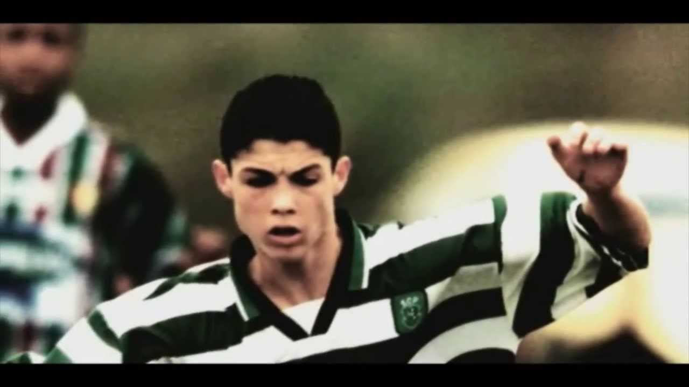

My biography
Cristiano Ronaldo dos Santos Aveiro was born on February 5, 1985, in Madeira, Portugal to Maria Dolores dos Santos Aveiro and José Diniz Aveiro. Cristiano has an elder brother, Hugo and two elder sisters, Elma and Liliana Cátia. His name was inspired by the former US-president, Ronald Reagan, whom his father was influenced by.
The island of Madeira was also the place where Cristiano first learned to master his skills as a footballer. He spent his early years playing for his local team, Nacional, and by the time he turned 12 years old, he already made his name for himself as one of Madeira's top footballers . It wasn't long before he started to catch the attention of other big Portuguese clubs. Among Sporting was Benfica, a team Cristiano and his father followed as a young boy. However he eventually chose to play for Sporting which was a team his mother loved and followed as she was growing up, to play with the likes of Figo was the dream for her son.
He was then spotted by former Liverpool manager, Gerard Houllier at the age of sixteen but Liverpool had no intentions to sign him at that time because they thought he was too young and he needed more time to develop his skills. However, in the summer of 2003, when Sporting played against Manchester United and defeated them, Cristiano caught the attention of Manchester United manager, Sir Alex Ferguson.
Ronaldo became Manchester United's first-ever Portuguese player. Initially, he requested for the number 28 as his jersey number because he didn't feel that he could live up to the pressure of previous players such as George Best and David Beckham who wore the number 7 jersey.
